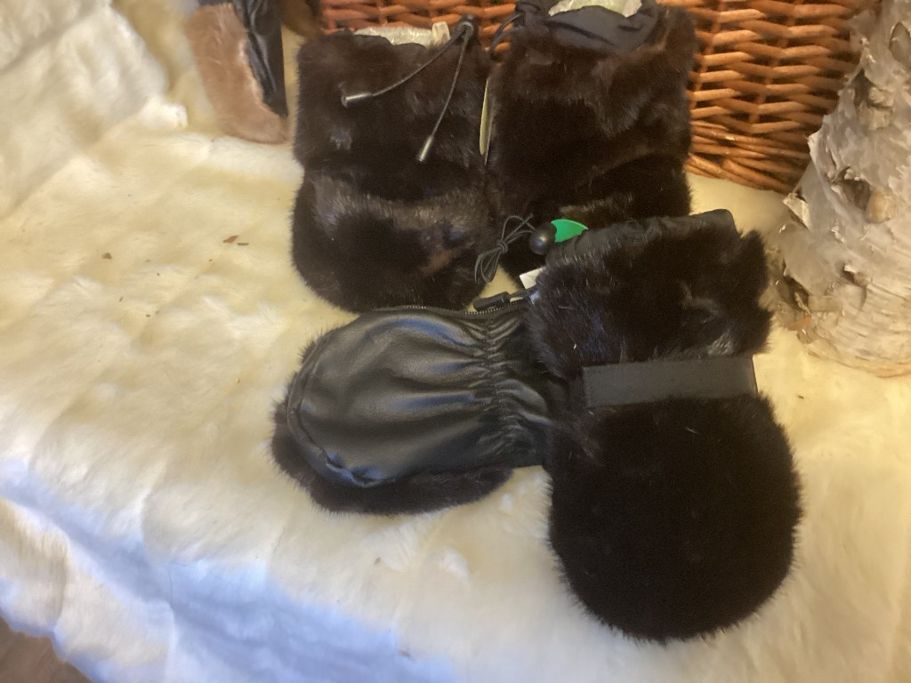

Mitaines bébé sans pouces 8-24 mois — vison
N° 103 · Mitaines en fourrure recyclée

Fourrure vison recyclée, sans pouces, munies d'une fermeture éclair
40,00 $ CAD
Création artisanale québécoise de Les Fourrures Boréales. Pour une pièce adaptée à vos mesures, voir aussi les articles en fourrure sur mesure.
Voir dans la boutique Autres mitaines en fourrure recyclée Contacter Lucie